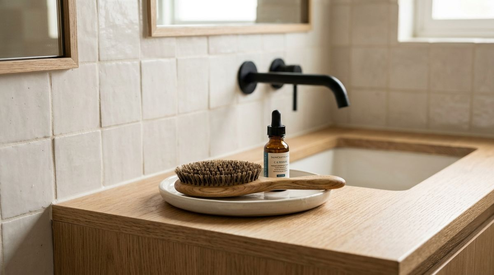

You spend Sunday afternoon clearing off your bathroom vanity. You put every bottle into cabinets, wipe the water spots around the faucet, and admire the spotless counter. But within twenty-four hours, the exact same scene unfolds:
- Your daily facial moisturizer is sitting uncapped beside the sink
- A hairbrush rests diagonally across the countertop
- A serum bottle and eye cream sit right against the mirror base
- A pair of hair clips and contact lens solution linger near the faucet
When bathroom counters repeatedly accumulate daily products, we often assume we need more storage bins, taller shelves, or stricter decluttering rules. But in most rental apartments and small bathrooms, that is not the real issue.
Everyday bathroom counter clutter doesn't happen because you lack storage. It happens because frequently used items have no intentional temporary place to land between uses.
The Bathroom Landing Zone Rule introduces a practical three-stage workflow: USE → TEMPORARY → RESET. Instead of demanding a sterile, completely bare counter, it gives active daily essentials a bounded transition home.
The Daily Vanity Relapse
The bathroom vanity is one of the most high-friction surfaces in any apartment. You use it in the morning when you are half-awake and rushing to get ready, and you use it at night when you are exhausted and ready for bed.
Expecting yourself to open three cabinet doors, slide open two deep drawers, and put away every single product during a 7:00 AM routine is simply unrealistic. When putting an item away takes five physical steps, the product naturally gets abandoned on the nearest flat surface.
Within two days, random placement turns into visual clutter. To learn how visual boundaries make compact spaces feel calm, see our guide on how to make a tiny bathroom feel less cluttered without adding storage.
What Is the Bathroom Landing Zone Rule?
The Bathroom Landing Zone Rule defines the operational rhythm of daily grooming products:
USE → TEMPORARY → RESET

A landing zone is not permanent storage. It is an intentional, bounded spot on or near the vanity designated for the 2–3 items you reach for multiple times a day. When products have a defined temporary home, the counter stays organized even during busy mornings.
"Temporary placement does not have to mean random placement. You don't need a bare bathroom counter—you just need fewer random landing spots."
Why Bathroom Counters Become the Default Landing Spot
Countertops attract items naturally because of physics and human behavior:
- Waist-Height Accessibility: The vanity surface requires zero reaching, bending, or door-opening.
- High Frequency: You brush your teeth twice a day, wash your face morning and night, and style your hair daily. Stashing items in deep cabinets creates excessive daily friction.
- The "I'll Use It Again Soon" Effect: If you know you will use your moisturizer again in twelve hours, your brain naturally resists putting it into a closed drawer.
When you acknowledge this reality instead of fighting it, you can design a system that works with your natural habits.
Temporary Is Different From Out of Place
The most important educational shift is realizing that visible items are not automatically clutter:
- Legitimate Temporary Items: An everyday hairbrush, morning moisturizer, and hand soap. These belong near the sink because they are actively in use every day.
- Out of Place Items: Unopened backup shampoo bottles, expired skincare jars, nail polish bottles from three weeks ago, and styling tools used once a month.
When you separate active rotation from deep storage, your vanity instantly feels manageable. For deep storage strategies, check out our guide on bathroom under-sink and linen closet organization.
The 3-Step System (USE → TEMPORARY → RESET)
Here is how the three stages work in daily practice:
| Stage | What It Means | Everyday Bathroom Example |
|---|---|---|
| USE | Active grooming routine | Applying facial serum or brushing teeth |
| TEMPORARY | Bounded resting spot between routines | Hairbrush & moisturizer rest on a small tray |
| RESET | Routine concluded; items returned | Occasional makeup returned to drawer |
This workflow pairs directly with the point-of-use storage rule, ensuring that items live where actions take place.
How to Create a Landing Zone Without Buying Anything
You do not need to buy acrylic organizers or expensive vanity accessories. You can create a functional landing zone using items you already own:
4 Ways to Create a Zero-Cost Landing Zone
1. The Repurposed Ceramic Dish:
Use a shallow dessert plate, ceramic coaster, or small wooden dish to hold your daily hairbrush and serum bottle. The physical lip creates an unmistakable visual boundary.
2. The Dedicated Corner Rule:
Designate the back right 6-inch square of your vanity countertop exclusively for active items. Leave the rest of the counter 100% clear.
3. The Medicine Cabinet Open Slot:
If your medicine cabinet is directly in front of the sink, reserve the bottom shelf directly at eye level as your landing station.
4. The Top Drawer First Half:
In vanities with drawers, use the front four inches of the top drawer as an open drop spot that can be pushed shut in one second.
What Belongs in a Bathroom Landing Zone?
A landing zone succeeds only when its boundaries are strictly protected:
- Qualifies for the Landing Zone:
- Everyday hairbrush or comb
- Daily facial moisturizer / SPF
- Toothbrush & paste
- Contact lens case in daily use
- Does NOT Qualify (Send to Permanent Storage):
- Backup soap bars and unopened shampoo
- Full makeup palettes and weekly face masks
- Hair straighteners, curling irons, and blow dryers
- Expired prescriptions and medicine bottles
For organizing cleaning products out of the vanity zone, read our guide on organizing bathroom cleaning supplies for faster cleaning.
A Simple 1-Minute Counter Reset
Keep your landing zone functional with a 60-second evening routine:
- Scan the Vanity: Look at the items currently resting outside the landing dish.
- Identify Stragglers: Spot any non-daily items (e.g., tweezers, nail clippers, occasional perfume).
- Return to Permanent Homes: Put non-daily items back into drawers or under-sink organizers.
- Straighten the Landing Dish: Align the hairbrush and daily bottle.
- Wipe the Counter: Give the open porcelain and wood counter a quick wipe to remove water spots.
Don't Try to Create a Sterile, Empty Vanity
Showroom bathrooms look completely empty because nobody lives in them. A real home requires practical access.
Having three carefully chosen, beautifully arranged daily items resting in an intentional dish makes a bathroom feel warm, functional, and lived-in. The goal is eliminating random clutter, not everyday convenience.
Landing Zone vs. Reach Zone: What's the Difference?
SpaceSavvyLiving uses two distinct frameworks for bathroom organization. Here is how they complement each other:
1. The Reach Zone System (Permanent Storage)
Answers: “Where should this item permanently live in the bathroom based on how often I use it?”
• Daily Items: Easiest reach (eye level / vanity drawers)
• Weekly Items: Secondary reach (under-sink shelves)
• Rare Items: Deep storage (high linen closet shelves)
2. The Landing Zone Rule (Active Transition)
Answers: “Where can a frequently used item temporarily rest during and between active morning/evening routines?”
• USE → TEMPORARY → RESET: Provides a bounded resting spot on the vanity so products don't scatter across the sink.
To set up your permanent storage hierarchy, review our complete guide on how to organize a tiny bathroom by frequency of use and the reach zone rule.
The Bathroom Landing Zone Rule at a Glance
USE → Keep it accessible during your routine
TEMPORARY → Give it a defined, bounded landing spot
RESET → Return it to its home when finished
Temporary placement works best when it has an intentional destination.
For more space-saving bathroom ideas, browse our full collection of bathroom organization & storage ideas.
Frequently Asked Questions
If you don't have a vanity counter, use a small narrow wall shelf above the faucet, an over-toilet shelf ledge, or the bottom shelf of your medicine cabinet as your designated landing zone.
Give each person their own distinct shallow dish or assign opposite sides of the vanity. When an individual dish overflows, it serves as an immediate visual prompt to reset non-daily items.
No. A small ceramic plate, a low wooden coaster, or simply designating a specific corner of the countertop works perfectly without spending any money.